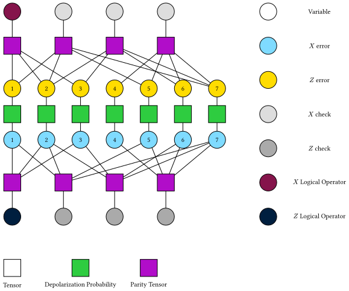

Tensor Network Decoder
In this section, we introduce the tensor network decoder.
Marginal Maximum A Posteriori (MMAP) Decoder
TNMMAP is a tensor network based marginal maximum a posteriori (MMAP) decoder, which finds the most probable logical sector after marginalizing out the error pattern on qubits. We can generate a TNMMAP decoder by TNMMAP().
using TensorQEC, TensorQEC.OMEinsum
decoder = TNMMAP(TreeSA())TNMMAP(OMEinsumContractionOrders.TreeSA{Int64, StepRangeLen{Float64, Base.TwicePrecision{Float64}, Base.TwicePrecision{Float64}, Int64}, OMEinsumContractionOrders.GreedyMethod{Float64, Float64}, Any}(20, 0.01:0.05:14.96, 10, 50, 1.0, 0.2, :greedy, 0, Any[], OMEinsumContractionOrders.GreedyMethod{Float64, Float64}(0.0, 0.0, 1)))Here TreeSA() is the default optimizer for optimizing the tensor network contraction order.
Now we use the Steane code as an example. 
steane = SteaneCode()
tanner = CSSTannerGraph(steane)
st = stabilizers(steane)6-element Vector{PauliString{7}}:
XIXIXIX
IXXIIXX
IIIXXXX
ZIZIZIZ
IZZIIZZ
IIIZZZZGiven a depolarizing error model, we can randomly generate an error pattern
error_model = iid_error(0.05,0.05,0.05, 7)
using Random
Random.seed!(1)
error_pattern = random_error_qubits(error_model)XIIIIII
Now we can measure the syndrome:
syndrome = syndrome_extraction(error_pattern, tanner)CSSSyndrome(Mod2[0₂, 0₂, 0₂], Mod2[1₂, 0₂, 0₂])To use the decoder, we need to compile it first.
compiled_decoder = compile(decoder, tanner, error_model);TensorQEC.CompiledTNMMAP{Int64, Array{Float64}}(TensorInference.MMAPModel{Int64, Array{Float64}}
variables: 15 (evidence → 0), 16 (evidence → 0), 17 (evidence → 0), 18 (evidence → 0), 19 (evidence → 0), 20 (evidence → 0), 21, 22
query variables: 21, 22
contraction time = 2^12.142, space = 2^9.0, read-write = 2^11.917, CSSTannerGraph(SimpleTannerGraph(7, 3, [[1], [2], [1, 2], [3], [1, 3], [2, 3], [1, 2, 3]], [[1, 3, 5, 7], [2, 3, 6, 7], [4, 5, 6, 7]], Mod2[1₂ 0₂ … 0₂ 1₂; 0₂ 1₂ … 1₂ 1₂; 0₂ 0₂ … 1₂ 1₂]), SimpleTannerGraph(7, 3, [[1], [2], [1, 2], [3], [1, 3], [2, 3], [1, 2, 3]], [[1, 3, 5, 7], [2, 3, 6, 7], [4, 5, 6, 7]], Mod2[1₂ 0₂ … 0₂ 1₂; 0₂ 1₂ … 1₂ 1₂; 0₂ 0₂ … 1₂ 1₂])), Mod2[0₂ 0₂ … 1₂ 0₂], Mod2[0₂ 0₂ … 1₂ 0₂])At this time we generate the tensor network for the code and the error model, as shown in the following figure. 
The squares represent tensors, and the circles represent the indices of the tensors. All indices are of dimension 2. We use 7 indices to represent $X$ errors on qubits, and 7 indices to represent $Z$ errors on qubits. On each qubit, the distribution of this two types of errors is correlated. The green squares represent this correlation. All purple squares represent the parity tensor, which elements are 1 if the input parity is even, and 0 otherwise. 
The gray circles represent the syndrome and the brown circles represent the logical operators. The marginal maximum a posteriori (MMAP) decoding problem is to find the most probable logical sector, given the syndrome and marginalize out the error pattern on qubits.
Now we can update the syndrome into our tensor network.
uai = TensorQEC.update_syndrome!(compiled_decoder.mmap, syndrome, 7)TensorInference.MMAPModel{Int64, Array{Float64}}
variables: 15 (evidence → 0), 16 (evidence → 0), 17 (evidence → 0), 18 (evidence → 1), 19 (evidence → 0), 20 (evidence → 0), 21, 22
query variables: 21, 22
contraction time = 2^12.142, space = 2^9.0, read-write = 2^11.917Now we can decode the syndrome:
result = decode(compiled_decoder, syndrome)Success
IXIXIIX
Also, we can use the decode function to decode the syndrome directly.
result = decode(compiled_decoder, syndrome)Success
IXIXIIX
To check the decoding result, we can first check whether we get a same syndrome as the input syndrome.
syndrome == syndrome_extraction(result.error_qubits, tanner)trueThen we can check whether there is a logical error. First we need to get the logical operators.
lx, lz = logical_operator(tanner)
check_logical_error(result.error_qubits, error_pattern, lx, lz)falseHere false means no logical error, and true means there is a logical error.
Maximum A Posteriori (MAP) Decoder
TNMAP is a tensor network based maximum a posteriori (MAP) decoder, which finds the most probable configuration of the error pattern.